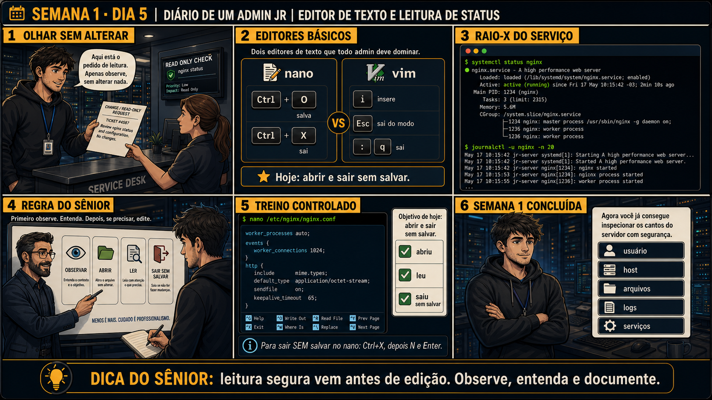

DIARIO DE UM ADMIN JR. | FASE 1 — LINUX, DO BÁSICO AO AVANÇADO
🧠 Antes de começar — 20 segundos de memória (Dias 3 e 4)
1. No Dia 3 você acompanhou um log crescendo em tempo real. Qual comando fazia isso — e como você saía dele? 2. No Dia 4, o que df respondia que o du não respondia?
1.tail -f arquivo.log mostra as linhas novas conforme chegam; sai com Ctrl+C. Hoje o journalctl -f faz exatamente a mesma coisa, só que para os logs do systemd. 2.df respondia quanto espaço existe e quanto foi usado por partição; du respondia qual pasta está ocupando. Um mede o tanque, o outro procura o vazamento.
🔗 Conecta com o Dia 4: ontem você aprendeu a diferenciar disco de memória e a
montar um relatório com evidência. Hoje fecha a primeira semana: um colega pede pra você "dar uma olhada" na
configuração de um serviço — e isso exige duas habilidades novas, abrir um arquivo de configuração e ler o
estado real de um serviço, sem quebrar nada dos dois.
🔓 Privilégio de hoje: ainda ZERO mudança no sistema. Mas ao final de hoje você
fecha a Semana 1 sabendo inspecionar qualquer canto do servidor com segurança — usuário, host, arquivos, logs
e serviços — sem nunca ter alterado nada. Amanhã começa a Semana 2, e a primeira mudança real da sua carreira.
Semana 1 · Dia 5 | Nível Júnior
Editor de Texto e Primeira Leitura de Status
nano, vim, systemctl status e journalctl — olhar sem alterar, o fechamento da primeira semana
ANTES DE ALTERAR, OBSERVE. DEPOIS DE ALTERAR, VALIDE.

1. O chamado
#4520PRIORIDADE ALTA16:47aberto por: suporte N1
host: srv-app-02 · serviço: serviço de emissão de notas
"O serviço aparece como 'não está rodando' no painel. Ninguém sabe desde quando nem por quê. Não reiniciem antes de entender."
Não reiniciar é justamente a parte difícil. Como você descobre o que aconteceu?
💡 Passa o mouse nas palavras destacadas pra ver uma dica rápida — clica se quiser a explicação completa com analogia.
2. O sênior te conta
🧑🏫 antes dos termos técnicos, a história de hoje
Hoje uma colega entregou um ticket pro Júnior e perguntou, meio sem jeito: "como eu abro a configuração
sem quebrar?". Boa pergunta — a pergunta certa, na verdade, mesmo que a pessoa que perguntou já trabalhe
aqui há mais tempo que ele. Editor de texto assusta iniciante porque parece um comando só, mas esconde
duas decisões diferentes: abrir um arquivo é sempre seguro; salvar uma alteração é o
momento real de risco. Confundir os dois é o que trava as pessoas.
Mostrei pro Júnior a saída de emergência de cada editor: no nano, é Ctrl+X e depois
N quando ele perguntar se quer salvar. No vim, é :q depois de sair do
modo de inserção com Esc. Com essas duas combinações na cabeça, ele podia abrir qualquer
arquivo do servidor pra ler, sem medo nenhum de estragar algo sem querer.
E teve mais uma coisa que ensinei hoje: rodar systemctl status e achar tudo active
(running), sem erro nenhum no journalctl, também é uma resposta válida pro ticket — não
precisa inventar problema onde não tem. Documentar "verifiquei, está tudo normal" fecha a Semana 1 do
jeito que ela começou: observando com método, sem tocar em nada.
3. Decodificador de conceitos
Clica em qualquer termo pra ver a definição completa e uma analogia do dia a dia:
4. Ferramentas e leitura da evidência
Comando
O que observar e por que importa
nano arquivo.conf
Abre um editor de texto simples. Ctrl+O salva, Ctrl+X sai.
vim arquivo.conf
Editor mais avançado. i entra em modo de inserção, Esc sai dele, :q sai do programa.
systemctl status nginx
Mostra se o serviço está ativo, há quanto tempo, e o PID principal.
journalctl -u nginx -n 20
Mostra as últimas 20 linhas de log daquele serviço específico.
$ systemctl status nginx
● nginx.service - A high performance web server
Loaded: loaded (/lib/systemd/system/nginx.service; enabled)
Active: active (running) since Fri 17 May 10:15:42 -03; 2min 10s ago
Main PID: 1234 (nginx)
$ journalctl -u nginx -n 20
May 17 10:15:42 jr-server systemd[1]: Starting A high performance web server...
May 17 10:15:42 jr-server systemd[1]: Started A high performance web server.
May 17 10:15:52 jr-server nginx[1234]: nginx started
May 17 10:15:55 jr-server nginx[1236]: worker process started
5. Laboratório guiado — pegue na mão, comando por comando
Segurança: execute as mudanças apenas em VM descartável e confirme nomes de discos, hosts e arquivos antes de cada comando.
CENÁRIOAção: Crie um serviço de teste que falha de propósito — sem um serviço quebrado de verdade, systemctl status e journalctl não têm o que te mostrar.
sudo tee /etc/systemd/system/teste-jr.service >/dev/null <<'EOF'
[Unit]
Description=Servico de teste do Admin Jr
[Service]
Type=oneshot
ExecStart=/bin/false
EOF
sudo systemctl daemon-reload
sudo systemctl start teste-jr.service # vai falhar — é esse o objetivo
Resultado esperado: o start retorna erro dizendo que o serviço falhou. Perfeito: agora existe um serviço em estado failed para você investigar como investigaria em produção.
Por que fizemos isso: ler o status de um serviço saudável ensina pouco. É no estado failed que aparecem as linhas que realmente importam — Active: failed, o código de saída e as últimas linhas do log.
Cilada comum: criar isso em servidor de produção. Só em VM descartável. O arquivo fica em /etc/systemd/system/ — anote, você vai removê-lo no último passo.
Se o seu resultado foi diferente
"tee: /etc/systemd/system/...: Permission denied" → o sudo precisa estar no tee, não no echo — é por isso que o comando está escrito nessa ordem. Copie-o inteiro. "Failed to start teste-jr.service: Unit not found" → faltou o sudo systemctl daemon-reload depois de criar o arquivo. O systemd só enxerga units novas após recarregar. O serviço iniciou com sucesso (não falhou) → confira se o ExecStart aponta para /bin/false. Se o seu sistema não tiver esse caminho, use /usr/bin/false.
Ação: Abra qualquer arquivo de configuração com nano, navegue até o final, e saia sem salvar.
nano arquivo.conf
# Ctrl+X pra sair, "N" quando perguntar se quer salvar
Resultado esperado: o arquivo continua exatamente igual depois — confirme comparando o tamanho ou o conteúdo antes e depois.
Por que fizemos isso: essa é a saída de emergência do nano — dominar ela é o que te dá liberdade de abrir qualquer arquivo pra ler, sem medo de estragar algo sem querer.
Cilada comum: apertar Ctrl+O (salvar) por reflexo em vez de Ctrl+X (sair) — são teclas próximas, e confundir as duas grava uma alteração que você nem queria fazer.
Ação: Repita o mesmo processo com vim.
vim arquivo.conf
# "i" pra entrar em modo de inserção, Esc pra sair dele, ":q" pra sair sem salvar
Resultado esperado: mesmo resultado do nano — arquivo intacto, você saiu sem alterar nada.
Por que fizemos isso: vim aparece em praticamente todo servidor Linux por padrão — não saber pelo menos sair dele sem salvar é um problema clássico de quem só conhece nano.
Cilada comum: ficar "preso" no vim sem saber sair, e digitar letras aleatórias tentando escapar — cada letra digitada em modo de inserção pode alterar o arquivo. Se travar, Esc primeiro, sempre.
Ação: Confira o status de 3 serviços diferentes da sua VM.
systemctl status ssh
systemctl status cron
systemctl status <outro serviço instalado>
Resultado esperado: três saídas diferentes, cada uma mostrando active/inactive/failed e o tempo de execução.
Por que fizemos isso: saber ler rapidamente se um serviço está saudável é o primeiro passo de qualquer chamado — antes de journalctl, antes de qualquer diagnóstico mais fundo.
Cilada comum: ver "active" e parar por aí, sem checar há QUANTO TEMPO está ativo — um serviço que reiniciou sozinho há 30 segundos está "active", mas isso já é uma pista de problema.
Ação: Leia os logs específicos de um desses serviços, procurando erro ou aviso.
journalctl -u ssh -n 20
Resultado esperado: uma lista de logs, mesmo que nenhum erro real apareça — o objetivo é praticar a leitura.
Por que fizemos isso: journalctl -u filtra só aquele serviço, em vez de despejar o log do sistema inteiro — é a mesma lógica de "less/tail -f em vez de cat" do Dia 3, aplicada a logs de serviço.
Cilada comum: rodar journalctl sem o -u, e se perder no log gigante do sistema inteiro em vez do serviço específico que interessa.
🧑🏫 Aqui entra o Mentor (em breve): se você não entender uma linha de log específica, este é o ponto onde o chat com o Sênior-IA vai ajudar a traduzir.
Ação: Feche a Semana 1: escreva um resumo com tudo que você aprendeu a inspecionar sem alterar nada.
# não é comando de shell — é o resumo, 5 linhas
# ex: identidade, navegação, disco/processos, editor, status de serviço
Resultado esperado: um resumo cobrindo identidade, navegação, disco/processos, e agora editor/status — sem nenhuma mudança real feita no sistema durante toda a semana.
Por que fizemos isso: fechar a semana com um resumo escrito é o que consolida os 5 dias como um método único (observar antes de agir), não 5 aulas soltas sobre comandos diferentes.
Cilada comum: listar só os comandos decorados, sem escrever o PADRÃO que se repetiu (confirmar antes de agir, ler antes de editar) — é o padrão que vai valer pra toda ferramenta nova daqui pra frente, não só as desta semana.
CENÁRIOAção: Remova o serviço de teste e confirme que o systemd não o conhece mais.
sudo systemctl reset-failed teste-jr.service
sudo rm /etc/systemd/system/teste-jr.service
sudo systemctl daemon-reload
systemctl status teste-jr.service 2>&1 | head -3 # deve dizer que não existe
Resultado esperado: "Unit teste-jr.service could not be found" — o serviço sumiu e a lista de falhas do sistema está limpa de novo.
Por que fizemos isso: unit de teste esquecida aparece para sempre em systemctl --failed e polui o diagnóstico do próximo incidente real. O reset-failed é o passo que quase todo mundo esquece — e é ele que limpa o histórico de falha.
Cilada comum: apagar o arquivo sem rodar daemon-reload depois. O systemd mantém a unit em memória e ela continua aparecendo, dando a impressão de que a remoção não funcionou.
Se o seu resultado foi diferente
Ainda aparece em systemctl --failed → rode sudo systemctl reset-failed sem argumento para limpar todas as falhas registradas.
6. Antes de ver as opções — tenta responder
🧠 Recall ativo: no nano, qual combinação de teclas te deixa sair de um arquivo SEM salvar nenhuma
alteração, mesmo que você tenha digitado algo por engano?
Ctrl+X pra sair, depois N quando ele perguntar se quer salvar, e
Enter pra confirmar. É a sequência mais importante da aula de hoje — sair sem salvar é o
que te dá liberdade de explorar um arquivo sem medo de quebrar algo.
QUESTÃO 1 de 3
7. Questão comentada — clica numa alternativa
Qual é a abordagem certa pra "dar uma olhada" na configuração de um serviço pela primeira vez?
💡 Analogia do Sênior para Fixar: Salvar e sair no Vim (:wq) com segurança é como trancar a porta e guardar a chave: garante que nenhuma edição ficou pela metade em arquivos críticos do /etc.
QUESTÃO 2 de 3 — cenário de erro real
7.1 O serviço está ativo, mas o ticket ainda faz sentido?
systemctl status nginx mostra active (running) há 2 minutos, e o journalctl não
mostra nenhum erro — só o processo iniciando normalmente.
Diante dessa evidência, o que você deveria fazer com o ticket #4587?
💡 Analogia do Sênior para Fixar: O arquivo temporário .swp do Vim é como uma cópia de segurança em papel carbono: serve para recuperar o texto se a energia cair no meio da edição.
QUESTÃO 3 de 3 — detalhe que confunde todo iniciante
7.2 Abrir um arquivo não é o mesmo que alterar ele
Você abriu /etc/nginx/nginx.conf com nano só pra ler, sem digitar nada, e depois apertou
Ctrl+X pra sair.
Só o fato de ter aberto o arquivo de configuração com um editor de texto já conta como uma alteração no sistema?
💡 Analogia do Sênior para Fixar: Usar 'systemctl status' antes e depois de editar uma configuração é como checar os batimentos cardíacos do paciente antes e depois de administrar o remédio.
8. Procedimento profissional
Abra o arquivo de configuração só pra leitura, sem intenção de editar ainda.
Saia sempre sem salvar até ter certeza absoluta do que está fazendo.
Confira systemctl status pra saber se o serviço está ativo, e há quanto tempo.
Leia journalctl do serviço específico em busca de erros recentes.
Documente o que encontrou no ticket, mesmo que a conclusão seja "está tudo normal".
Prevenção — o que evita repetir esse tipo de problema
Documente, no onboarding do time, os dois atalhos de saída-sem-salvar (nano e vim) como
primeiro conteúdo que todo novato aprende — antes até de aprender a editar de verdade. Padronize que
tickets do tipo "dê uma olhada" sempre fecham com um registro explícito ("verificado, sem anormalidade"),
nunca fechados em silêncio, mesmo quando não há problema nenhum pra reportar.
9. Validação e encerramento
Você abriu e saiu de um arquivo de configuração sem alterar nada, em dois editores diferentes.
Você sabe diferenciar status ativo de status com falha num serviço.
Você leu logs específicos de um serviço com journalctl -u.
Toda a Semana 1 foi concluída sem uma única mudança real no sistema.
Rollback e limites
Como toda a semana foi somente leitura, não há rollback técnico nenhum a fazer.
Esse é o ponto: você chega no fim da Semana 1 exatamente com o sistema no mesmo estado em que começou —
só que agora sabendo inspecionar cada parte dele com segurança.
💡 Sobre repetição espaçada: "leitura segura vem antes de edição" fechou
literalmente todos os 5 dias desta semana, em contextos diferentes (host, identidade, arquivos, recursos,
configuração). O Anki vai revisar os cinco juntos, porque é a mesma ideia central se repetindo.
10. Resposta final
Alternativa correta: B. Nesta aula, a decisão correta foi abrir o
arquivo com nano, ler com calma, e sair sem salvar — mexer vem depois. O ponto central do caso é este:
observar, entender e documentar antes de mexer é a mesma filosofia da semana inteira.
🔓 Semana 1 concluída
Zero mudanças no sistema, e você agora consegue inspecionar com segurança:
usuário (Dia 1-2), host (Dia 1-2), arquivos (Dia 3), logs (Dia 3, 5) e
serviços (Dia 5). Amanhã começa a Semana 2 — e com ela, a primeira mudança real e supervisionada da
sua carreira: reiniciar um serviço, com aprovação, e ver essa ação ficar registrada pra sempre.